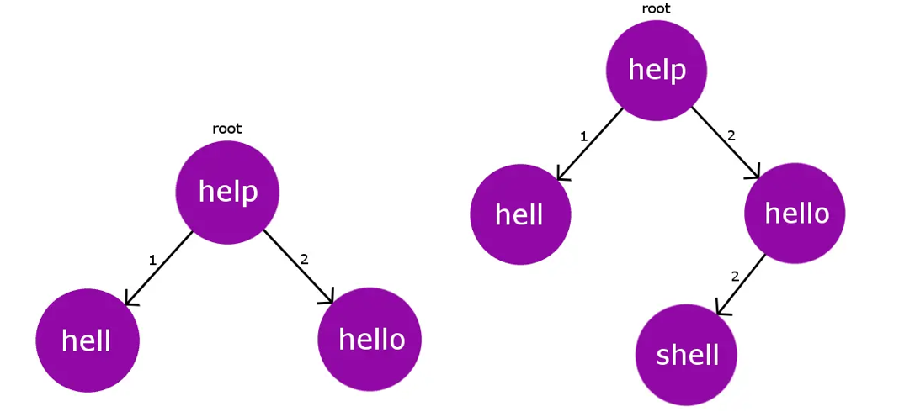

Levenshtein距離是兩個字串間，透過新增、更換、刪除下的最少操作次數，透過動態規劃解決。
BK Tree 是基於 Levenshtein distance 的樹資料結構。節點為詞，線的權重為編輯距離，即透過Levenshtein distance得到的值。
插入時，對於根節點編輯距離重複的點會碰撞，因此，新加入的點會以碰撞點為父節點進行插入，並且編輯距離變成與該碰撞節點的編輯距離。

對於搜尋最接近的正確單字，我們需要設置一個容錯值(Tolerance)，以及計算目前的字與root間的距離，稱dist，然後我們就可以去迭代[dist-tolerance, dist+tolerance]間距離的所有單字，以降低暴力搜尋所有節點的複雜度。針對每一個在距離內的節點，將其加入可能列表中，並對該點進行遞迴再判斷，藉以達成所以相近字詞搜尋。
筆者: NTUST So Hard